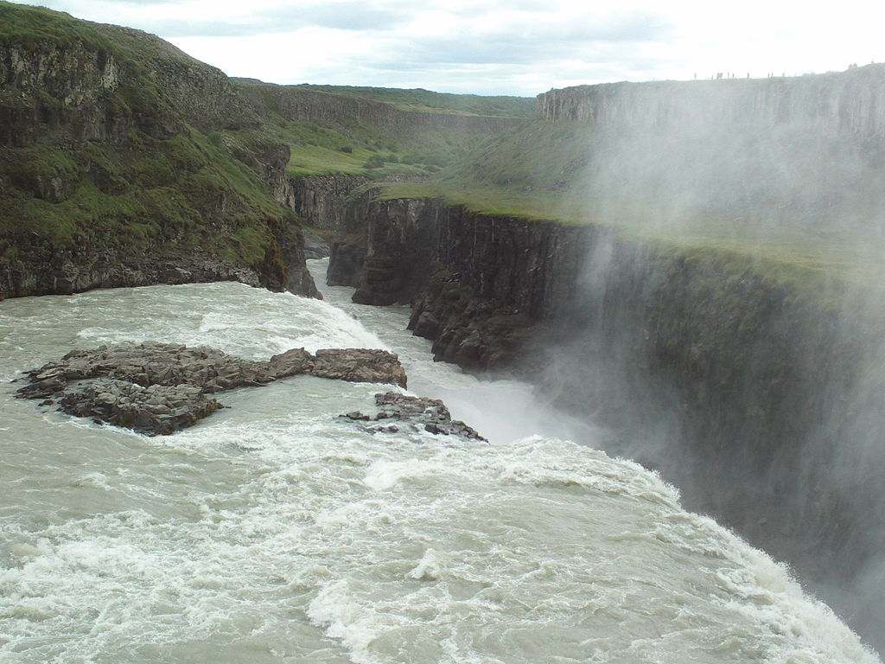
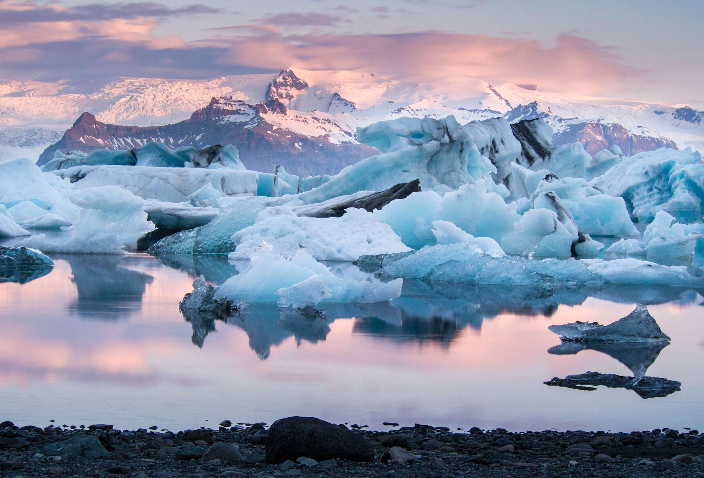
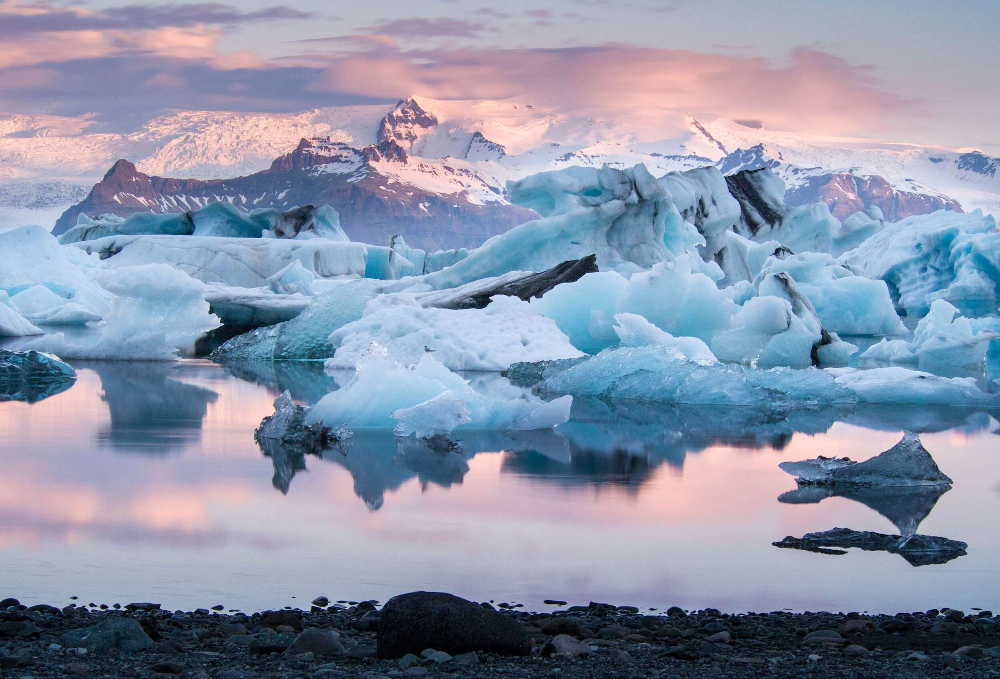
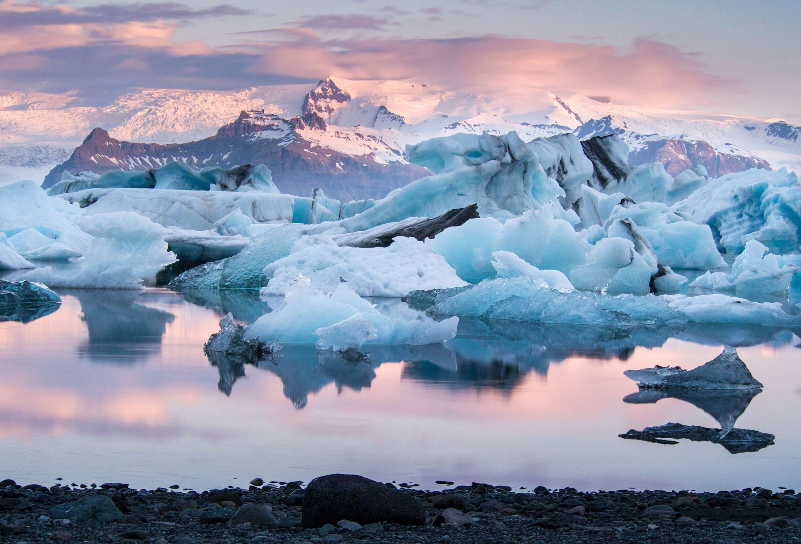

Photo Gallery  Gullfoss waterfall in spring. Relaxing in the Blue Lagoon geothermal spa.  Icebergs drifting in Jökulsárlón Glacier Lagoon.
 Relaxing in the Blue Lagoon geothermal spa.

Icebergs drifting in Jökulsárlón Glacier Lagoon.
Relaxing in the Blue Lagoon geothermal spa.

Icebergs drifting in Jökulsárlón Glacier Lagoon.